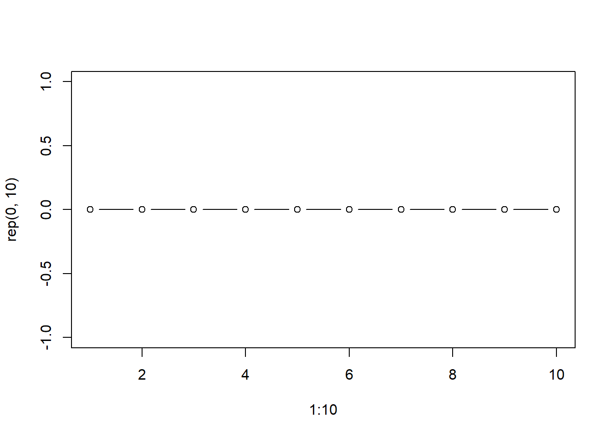

2 Tema 2: Probabilidades
2.1 Experimento Aleatorio
Proceso mediante el cual se obtiene resultados, los cuales no conocemos el resultado final.
2.2 Espacio Muestral
\[\Omega\]
Es la colección de todos los resultados posibles de un experimento aleatorio.
Exp: Lanzar un dado y observar la cara superior, \(\Omega=\{1,2 ,3 ,4 ,5 ,6\}\)
Exp: Lanzar dos dados y observar las caras superiores de ambos dados, \(\Omega= \{(1,1),(1,2),(1,3), (1,4),...,(6,6) \}\)
\(\Omega= \{(i,j); i=1:6,j=1:6 \}\)
El tamaño del espacio muestral en este caso es de 36. \(6*6=36\)
El espacio muestral de un experimento, puede ser:
- Finito numerables
- Infinito no numerables
- Infinito numerables
Exp: Tiempo en el que una persona tarda en llegar a la U desde su casa (0, 60)
Ejercicios recomendados: Pg: 222. 1 al 8.
2.2.1 Ejemplos de espacios muestrales
- El experimento: determinar el sexo de un niño/a recién nacido.
\[\Omega=\{Femenino, Masculino \}\]
- En una competencia de caballos, con 7 caballos, el experimento: ordenar todas las posibles llegadas de estos 7 caballos. (a,b,c,d,e,f,g)
\[\# \Omega= 7 ! = 7*6*5*4*3*2*1=5040\]
\[\Omega=\{\text{Todas las 7! permutaciones de } (a,b,c,d,e,f,g) \}\]
- El experimento es medir el tiempo de vida de un componente electrónico de un aparato (horas).
\[\Omega=\{x: x \geq 0 \}\]

2.3 Evento (E)
\[E \subset \Omega\]
2.3.1 Ejemplos
Sea el evento E nace una niña, \(E=\{Femenino \}\)
Se lanza un dado, sea el evento \(A\) sale par
\[A=\{2,4,6 \}\]
3, En el ejemplo de los caballos. Sea el evento \(E\) el caballo \(c\) gana la competencia.
\[\# E = 1 * 6*5*4*3*2*1=6!= 720\]
\[E = \{(c,a,b,d,e,f,g),(c,a,b,d,e,g,f),(c,f,b,d,e,a,g),\ldots \}\]
\[E = \{ \text{Son las permutaciones de 6! de tal forma que c es primero: } (a,b,d,e,f,g) \}\]
- Se lanza dos dados y se suman ambas caras. Defina los eventos:
\[\Omega=\{2,3,4,5,6,7,8,9,10,11,12 \}\]
- la suma es par, \(A=\{2,4,6,8,10,12 \}\)
- la suma es múltiplo de 7 \(B=\{7\}\)
- la suma es 1, \(C=\{\emptyset\}\)
- En el ejemplo del componente electrónico, sea el evento \(E\) el componente dura al menos 5 horas.
\[E=\{x: x\geq 5 \}\]
- En el ejemplo del componente electrónico, sea el evento \(E\) el componente dura a lo sumo 5 horas.
\[E=\{x: x\leq 5 \}\]
2.4 Operaciones con los eventos
Sean \(A\), \(B\) y \(C\) eventos.
Evento vacio \(\emptyset\)
El complemento de un evento
\[A^c=\{ w \in \Omega \text{ pero no pertenecen a } A \}\]
- La unión de eventos
\[A \cup B = \{w \in \Omega: w \in A \text{ ó } w\in B \}\]
- La intersección de eventos
\[A \cap B= \{w \in \Omega: w \in A \text{ y } w \in B \}\]
- Dos eventos son mutuamente excluyentes si:
\[A \cap B = \emptyset\]
- Ejercicio: Dos personas A y B se distribuyen al azar en tres oficinas numeradas 1,2 y 3 .Si las dos personas pueden estar en la misma oficina ,defina un espacio muestral adecuado
\[\Omega=\{(1A,1B),(2A,2B),(3A,3B),(1A,2B),(1A,3B),(2A,3B),(1B,2A),(1B,3A),(2B,3A) \}\]
Ejemplo: En el lanzamiento de 2 dados y la suma de sus resultados, sean los eventos
\(A:\) La suma es Par,
\(B:\) La suma es impar
\(C:\) La suma es multiplo de 7
\(D:\) La suma es mayor a 5
Describir los eventos y luego encontrar
- \(A \cup C=\{2,4,6,7,8,10,12 \}\)
- \(B \cap D=\{7,9,11 \}\)
- \(C \cup D^c=\{2,3,4,5,7\}\)
- $A (BC )=A B = $
- \(A \cup (B\cap C)=A\cup C=\{2,4,6,7,8,10,12 \}\)
Los eventos
- \(A=\{2,4,6,8,10,12\}\)
- \(B=\{3,5,7,9,11 \}\)
- \(C=\{7 \}\)
- \(D=\{6,7,8,9,10,11,12\}\)
- \(D^C=\{2,3,4,5\}\)
- \(C \subset B\), entonces \(C\cup B=B\), \(C \cap B=C\)
2.4.1 Algunas propiedades sobre las operaciones en eventos
Sean \(A\), \(B\), \(C\) y \(D\) eventos,
\(A \cup B= B \cup A\), \(A \cap B= B \cap A\) Conmutativa
$(A B) C= A (B C) $ Asociativa
\(A \cup (B \cap C)= (A \cup B) \cap (A \cup C)\) Distributiva
$A (B C)=(AB) (AC) $ Distributiva
\((A \cup B)^c= A^c \cap B^c\)
\((A \cap B)^c= A^c \cup B^c\)
Ley de Morgan, sea \(E_1, E_2, E_3, \ldots, E_n\), \(n\) eventos de algun experimento aleatorio
\[ (\cup_{i=1}^{n}\{E_i\})^c = \cap_{i=1}^{n}\{E_i ^c\}\]
\[ (\cap_{i=1}^{n}\{E_i\})^c = \cup_{i=1}^{n}\{E_i ^c\}\]
- \((A^c)^c=A\)
2.5 Probabilidad: Medida de incertidumbre
- Probabilidad teórica: los casos posibles sobre los casos totales
\[P(A)= \frac{\text{Casos posibles}}{\text{Casos totales}}=\frac{\#A}{\# \Omega}\]
Ejemplo: El lanzamiento de un dado, \(\Omega=\{1,2,3,4,5,6\}\), si el evento es \(A=6\), \(B=\) es par.
\(P(A)=\frac{1}{6}\), \(P(B)=\frac{3}{6}=1/2\)
- Probabilidad frecuentista:
\[P(A)=lim_{n \rightarrow \infty} \frac{n(A)}{n} =lim_{n \rightarrow \infty} \frac{\# A_n}{n}\]
## [1] 1 0 1 1 1 1 1 0 0 0 1 1 0 1 1 1 0 0 0 0 0 0 1 1 1 0 0 1 0 0 1 0 0 1 0 0 1
## [38] 1 1 1 1 0 1 1 0 1 0 0 1 0 1 1 1 1 0 1 0 1 1 0 1 0 1 1 0 1 1 1 0 1 0 1 0 0
## [75] 1 0 1 0 1 1 1 1 0 1 0 0 0 0 0 1 0 1 0 0 0 0 1 0 0 0## [1] 51\(P(escudo)=\frac{51}{100}=0.51\)
- Prabibilidad subjetiva (experiencia) (apriori)
\[P(escudo)=1/3\]
\[P(llueva_{hoy})=0.99\]